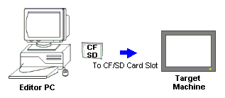

|
|
|
|
|
|
|
|
To copy both the user application and run-time system files to the CF Card/SD Card or USB drive, use the CF Card/SD Card or USB drive download method. You would use this download method when:
The target machine is not accessible over the network.
The user application is larger than available space in internal memory (FEPROM).
You cannot recover your target's password and you need to reset the password.
The run-time system files were damaged during download and you want to recover the system.

|
|
|
UNINTENDED EQUIPMENT OPERATION When you connect one or more USB devices to a target machine via a USB hub, you must use a USB hub with external power supply. Failure to follow these instructions can result in death, serious injury, or equipment damage. |

Check that your target machine supports CF card/SD card or the USB drive before using this method. For a list of targets that support the CF Card/SD Card or USB drive download method, see Appendix 5, Hardware Specifications.
The USB drive must be formatted in FAT32. For information on specific models of USB drives, contact your Schneider Electric Distributor.
When you upgrade the editor application as a result of a new release, the run-time system files are automatically upgraded when you download the runtime system files and user application.
The File System download method can only be used with a CF card/SD card in a Secondary Drive card slot. It is not supported for system CF cards/SD cards used as the Main Drive in a target machine.
If the target's Main or Secondary Drive is full, the project cannot install. A warning message will display indicating the Main Drive or Secondary Drive is full. This message will be truncated on the HMISTO targets due to the panel size.

To check the size of the user application, see the Build results in the Feedback Zone. Download may not complete if there is not enough disk space on the CF Card/SD Card or USB drive.
The available internal memory (Flash EPROM) depends on the target machine model. Check the user manual for your target machine to make sure your application does not exceed memory limitations.
Insert the CF Card/SD Card into a CF Card/SD Card reader or the USB drive into the USB port, visible from the editor PC.

Use CF Cards/SD Cards manufactured by Schneider Electric only. CF Cards/SD Cards from other manufacturers do not meet required specifications. For information about CF Cards/SD Cards you can use, see Appendix 1, Hardware Manuals.
In Vijeo-Designer, in the Navigator window's Project tab, right-click the Target node and click Properties to open the Property Inspector.
Set the Download property to File System.
In the Path property, define the location of the CF Card/SD Card reader or the USB flash memory.

Only local path names are supported for download. To download to a network drive, first map the network drive to your local drive and then define this path for download.
If the target machine supports Ethernet, the Download properties also list IP address settings. The target machine uses the IP address for communicating with PLCs, sharing data with other target machines on the network, and up/downloading data with the Data Manager.
When Install Options is set to Single Install, even if the IP address is already set up on the target machine, it's overwritten with this IP address. After download is complete, you can change the IP address settings on the target machine.
If the target machine is not used in a network environment, you can ignore these settings.
For most normal applications, in the Install Options property select Single Install. You should also use this option when: downloading to a brand new target machine, downloading after the editor has been upgraded, or downloading after the runtime fails to run on the target machine.
Select Multi Install when:
Using the CF Card/SD Card to install the run-time system files and user application to multiple target machines.
Using the CF Card/SD Card or USB drive to recover run-time data files and user application files from a failed target to a new target.
Right-click the Target node, and click Download.
After Vijeo-Designer indicates download is complete, make sure the CF Card/SD Card reader or the USB flash memory has completed writing before you remove the CF Card/SD Card or the USB drive.

Even though Vijeo-Designer may indicate download to the CF Card/SD Card is complete, do not immediately remove the CF Card/SD Card from the drive. Although downloading to the drive may be complete, writing to the CF Card/SD Card may not be. Use the reader's lamp indicator or other method to confirm the write operation has ended before you remove the CF Card/SD Card.
Insert the CF Card/SD Card and turn on the machine to install the user application and runtime system files from the CF Card/SD Card.
Insert the CF Card/SD Card in the target machine's CF Card/SD Card slot.


Once the CF Card/SD Card is inserted in the target machine's CF Card/SD Card slot, the target reboots and overwrites the application currently on the target.
Turn on the target machine, to install the runtime system files and user application onto the target machine.
On the target machine's CF Card/SD Card dip switches, make sure DipSwitch1 = ON so it loads the application from the CF Card/SD Card into internal memory (flash memory). When this dip switch is OFF, the target machine runs the user application stored in internal memory.

After all the data is copied over, the runtime and user application begin.
Insert the USB drive to the target machine to install the user application and runtime system files from the USB drive.
Insert the USB drive in the target machine's USB port.

Once the USB drive is inserted, a message displays asking if you want to install the project and erase the old project. Click to confirm the installation and the removal of the old project.
The runtime system files and user application will be installed onto the target machine. Once all the data is copied over, the runtime will restart and the user application will begin.